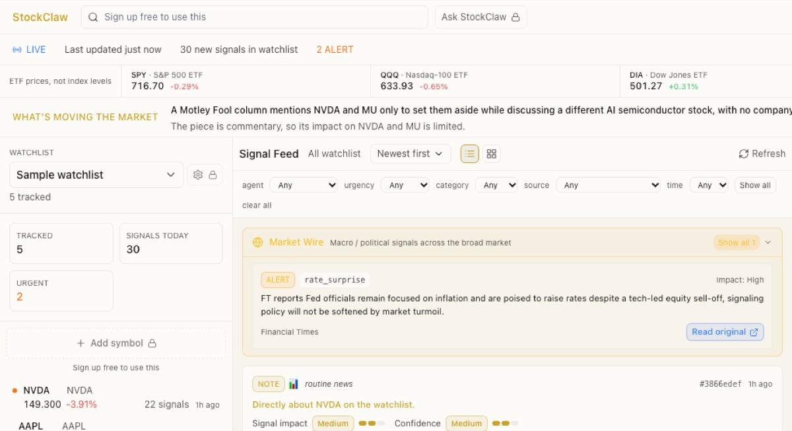

Case study · Apr 2026 – present
StockClaw AI
A market intelligence platform that reads filings, central-bank releases and financial news, and turns them into ranked, source-cited signals for each user's watchlist.
stockclaw.coLive on Google PlayTry it without signing up2-minute demoUser guide
01The problem
Anyone holding a handful of stocks faces the same flood: SEC filings, insider trades, Federal Reserve statements, agency releases and hundreds of news stories a day, most of which have nothing to do with what they own. Generic news apps rank by popularity, and a chatbot asked about a ticker will happily answer from whatever it half remembers.
The goal was a product that watches 30+ feeds on the user's behalf, keeps only what touches their watchlist, says how urgent it is, and can always show where a claim came from.

02How a signal is made
Ingestion runs once for everyone. Each item is deduplicated by a content hash, so the same story republished on three sites is read once. Only then does the pipeline split per user: a watchlist filter decides what is relevant, and five specialist agents look at each item at the same time.
Each agent is a LangGraph state graph: it drafts a signal in a ReAct loop with domain tools, then a Reflexion step critiques and revises the draft, with an iteration cap so a loop cannot run away. The synthesis step merges the five views into one Pydantic schema with an impact score and one of four urgency tiers, and drops items that do not clear the quality gate.
03Asking questions of your own signals
The chat analyst answers questions over the signals a user has already received. Retrieval is hybrid because pure vector search is weak on exact names: a ticker or a phrase like "Section 232 tariff" is better found by keyword. The two result lists are fused, reranked, and then passed through a confidence gate.
04Decisions and trade-offs
Each of these has its own architecture decision record, with the alternatives that were considered.
Agents in parallel, not in a chain
Run one after another, five agents add up their latencies. Run together with asyncio.gather, the wait is set by the slowest one. The cost is a more complex orchestrator, which is worth it for a product where a late alert is a useless alert.
Shared ingestion, per-user fan-out
Feeds are crawled and deduplicated once, and only the per-user step costs model calls. Without that split, LLM spend would grow with every new user reading the same stories.
Hybrid retrieval with a refusal floor
Dense search finds meaning, keyword search finds exact tickers and names, and Reciprocal Rank Fusion combines them without tuning weights. The confidence gate makes "I don't have a source for that" a normal answer.
Strict schemas at every boundary
Crawler output, agent output and delivered signals are all Pydantic v2 models, so bad data is stopped where it enters instead of three steps later. Per-user Row Level Security in Postgres keeps one user's watchlist and signals out of another's queries.
05Cost and compliance
- Model spend came down through a cross-user analysis cache, prompts arranged to hit the provider's prompt cache, and off-peak batching. Each change was measured against a recorded noise baseline, so a saving had to be larger than the run-to-run wobble before it counted.
- Acceptance criteria were written down before each evaluation run. Some cheaper options failed them and were dropped even though they saved money, for example skipping the Reflexion step on low-impact drafts.
- I audited the licences of 33 news sources and switched off the ones that do not allow commercial use.
- The product reports events, not advice. A guard blocks buy and sell wording in all five interface languages.
06Getting onto Google Play
The first Android build was a Trusted Web Activity wrapping the web app. It passed closed testing in October 2026, but Google asked for more testing before production. Rather than keep patching a wrapper, we rebuilt the client as a native React Native app with Expo, with Google and GitHub sign-in. After a second closed test starting 13 November, Google granted production access, and the app went live in 147 countries on 22 November 2026.
07How it was built
Choices with a real alternative get a decision record, schema changes go through Alembic migrations, and cost claims have an evaluation record behind them. The work is in a private repository; I am happy to walk through the code and the decision records in an interview.